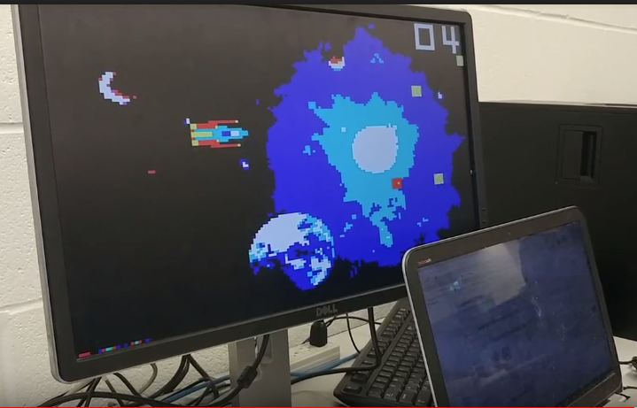

Technologies Used: Python, OpenCV, Tensorflow, MySQL, PyQt
PillSafe is an application built to classify medication using computer vision and machine learning techniques. I developed this as part of a research internship with the National University of Singapore. Users can enter a pill into the database with a single click of the camera. Users can also remove pills and re-insert them to account for the continually changing nature of medical advances.
Technologies Used: C++, GTK, Dark Sky API, Open Street Maps API
A semester long mapping application dedicated towards assisting tourists in finding their way around a new city. This GIS is designed to be visually appealing and find routes efficiently! We programmed this application in a team of 3 in C++, using GTK for the GUI. Features I programmed specifically include:
Technologies Used: Verilog, PS-2 Controller, DE1-SoC Board
An arcade game developed in Verilog. Object of the game is to "catch" the stars and "avoid" the asteroids with the spaceship. I worked on this project with a partner for my Digital Systems course as a final project. My role involved creating an algorithm to randomly generate stars and asteroids, as well as writing a Finite State Machine to control game state.
 Click Here To See The Github Repository